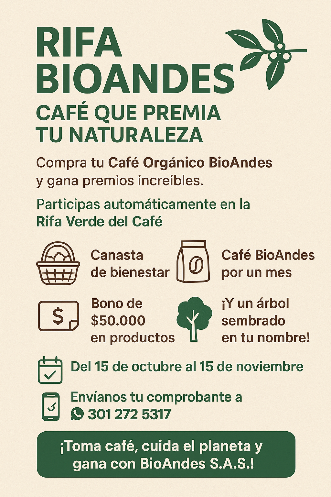
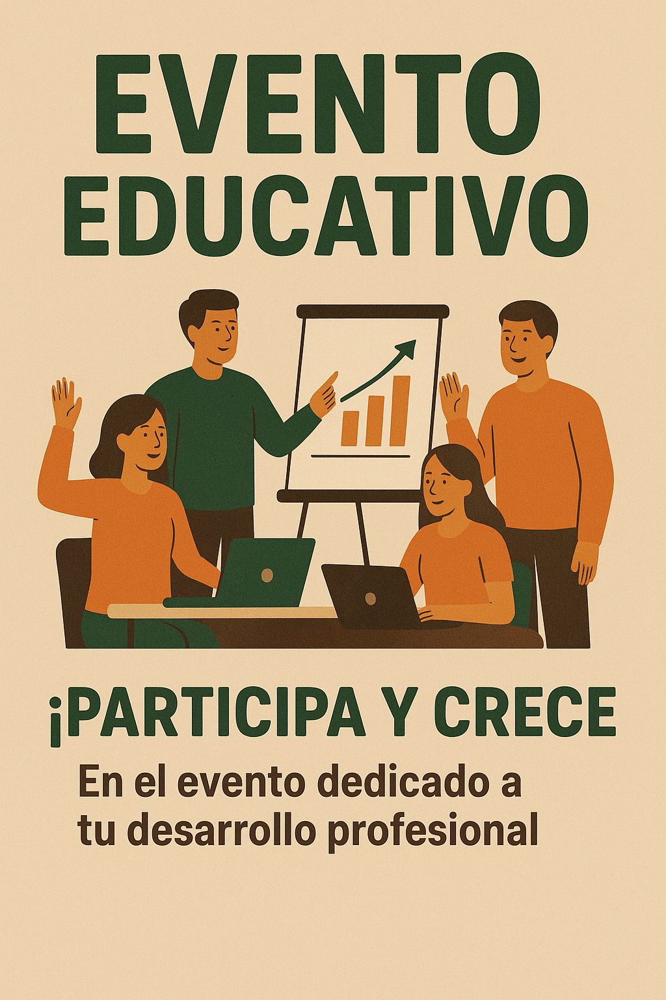
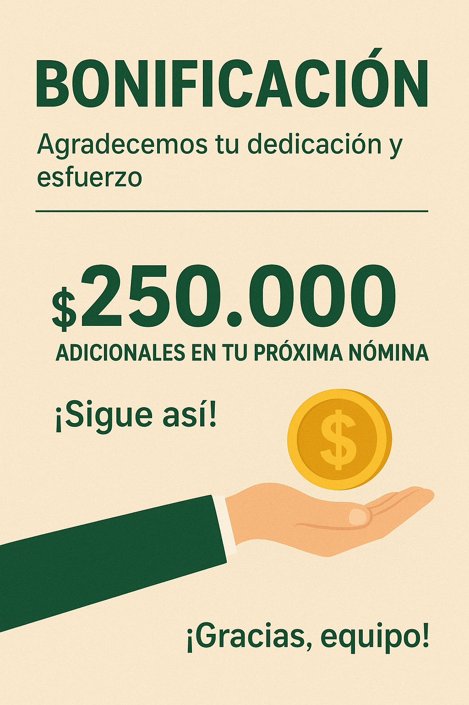
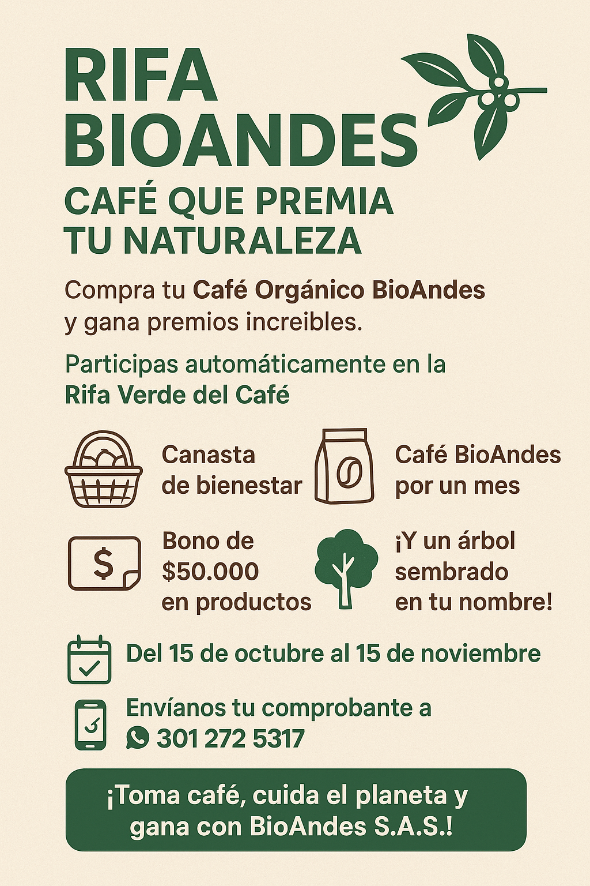
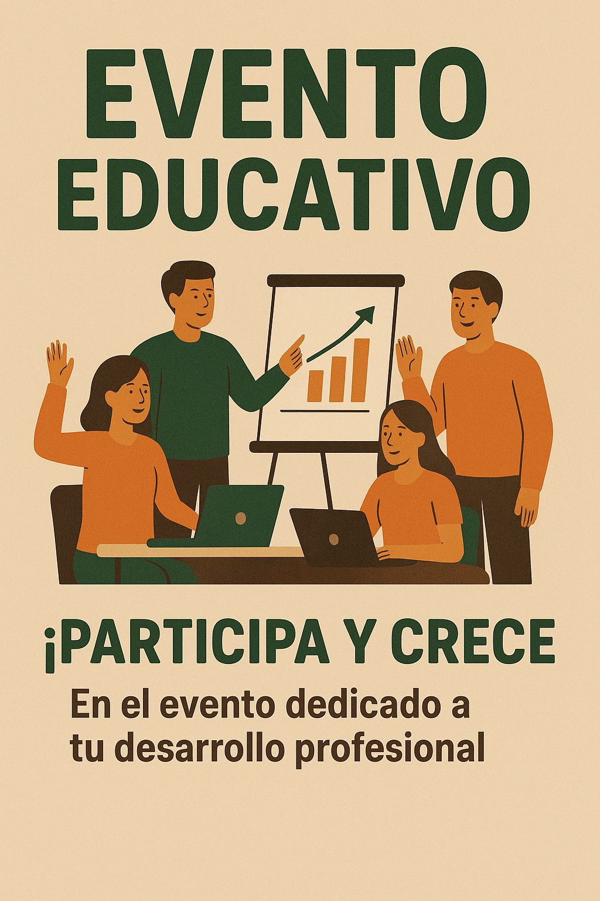
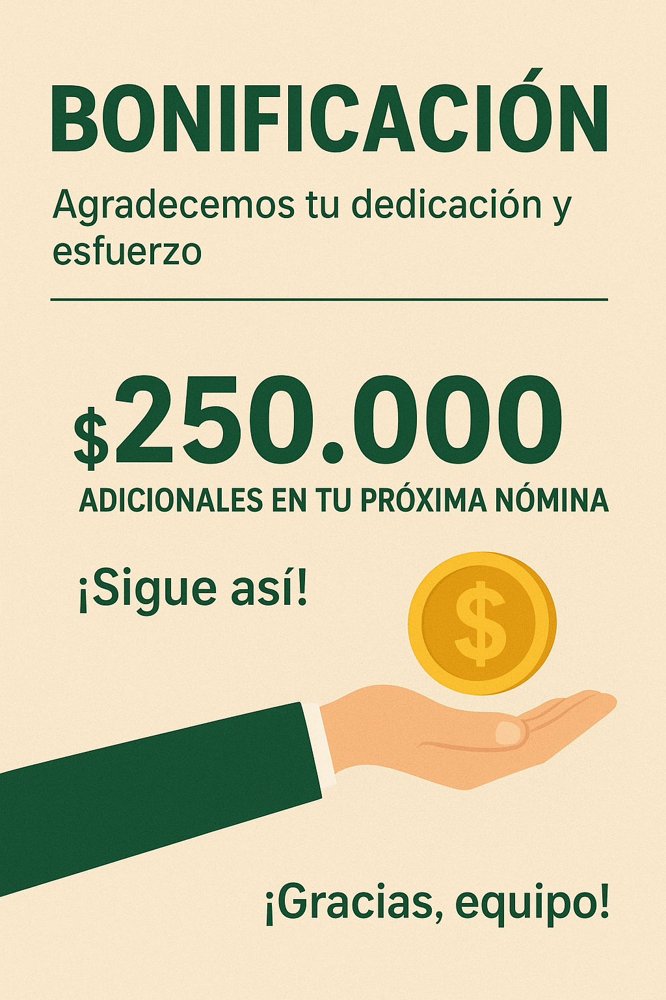

Bienvenido a BioAndes S.A.S, su socio confiable en soluciones de alimentación. La empresa está dedicada a la producción de productos naturales con el fin de mejorar la salud de las personas.
Explore nuestro sitio para descubrir más sobre nuestros productos, servicios y valores.

Características: 100% naturales, sin azúcar añadida, sin conservantes.
💰 Precio: 5.000 COP

Características: 100% naturales, sin azúcar añadida, sin conservantes.
💧 Precio: 6.000 COP

Café orgánico BIOANDES SAS. Proceso lavado, variedad arábica, tostión media.
Características: 100% café orgánico arábica. Libre de pesticidas, químicos y fertilizantes sintéticos.
☕ Precio: 35.000 COP
En BioAndes S.A.S promovemos una cultura basada en la transparencia, responsabilidad, equidad e integridad para garantizar una gestión ética y sostenible.
En esta sección se encuentra lo que son las Debilidades, Oportunidades, Fortalezas y Amenazas de BioAndes S.A.S.
En esta sección se encuentra lo que son las Debilidades, Oportunidades, Fortalezas y Amenazas de BioAndes S.A.S.
BioAndes S.A.S es una empresa dedicada a la producción y comercialización de alimentos orgánicos y naturales, comprometida con la sostenibilidad ambiental y el bienestar social. Fundada en 2025, nuestra misión es ofrecer productos de alta calidad que promuevan un estilo de vida saludable, al mismo tiempo que apoyamos a las comunidades agrícolas locales y protegemos el medio ambiente.
Nuestros valores fundamentales incluyen la integridad, la innovación, la responsabilidad social y el respeto por la naturaleza. Creemos en la importancia de trabajar en armonía con el entorno, utilizando prácticas agrícolas sostenibles y promoviendo el comercio justo.
La gestión de BioAndes S.A.S se fundamenta en la Administración Científica desarrollada por Frederick W. Taylor, la cual se centra en:
Producir y comercializar alimentos orgánicos y naturales de alta calidad, promoviendo un estilo de vida saludable, apoyando a las comunidades agrícolas locales y protegiendo el medio ambiente a través de prácticas sostenibles.
Ser reconocidos como líderes en la industria de alimentos orgánicos y naturales a nivel nacional, expandiendo nuestra presencia en el mercado mientras mantenemos nuestro compromiso con la sostenibilidad ambiental y el bienestar social.
Filosofía: Creemos en la importancia de trabajar en armonía con el entorno, utilizando prácticas agrícolas sostenibles y promoviendo el comercio justo para mejorar la calidad de vida de nuestros clientes y comunidades.

Obtener reconocimiento a nivel nacional y que las personas mejoren su salud con nuestros productos.
Ser una empresa sostenible y rentable, que genere valor para sus clientes, empleados y la comunidad.
Expandir nuestra presencia en el mercado nacional e internacional, aumentando nuestras ventas y participación.
Un negociador enfocado en resultados es aquel que prioriza el logro de objetivos y metas específicas durante el proceso de negociación. Este tipo de negociador se caracteriza por:
Nuestra cultura organizacional se basa en el CLAN, en donde el trabajo es en equipo y la colaboración son fundamentales para alcanzar nuestros objetivos. Fomentamos un ambiente de confianza y respeto, donde cada miembro del equipo se siente valorado y motivado para contribuir al éxito colectivo. La comunicación abierta y la participación activa son pilares de nuestra cultura, promoviendo la innovación y el aprendizaje continuo.
Comportamientos que reflejan nuestra cultura organizacional: Modelo relacionado con cambios en el comportamiento Este modelo busca transformar las actitudes, valores y formas de interacción de los colaboradores. En BioAndes, se promueve la comunicación abierta, el liderazgo participativo y el trabajo en equipo, fortaleciendo así el compromiso y la motivación del personal. Las estrategias incluyen capacitaciones, espacios de participación y el fomento del aprendizaje continuo, con el propósito de consolidar un ambiente laboral armónico y orientado al bienestar colectivo.
Paso a paso para implementar nuestra cultura organizacional:
.png)
En BioAndes S.A.S, nuestras estrategias empresariales se centran en la sostenibilidad, innovación y crecimiento sostenible. A continuación, se detallan nuestras principales estrategias:
 




